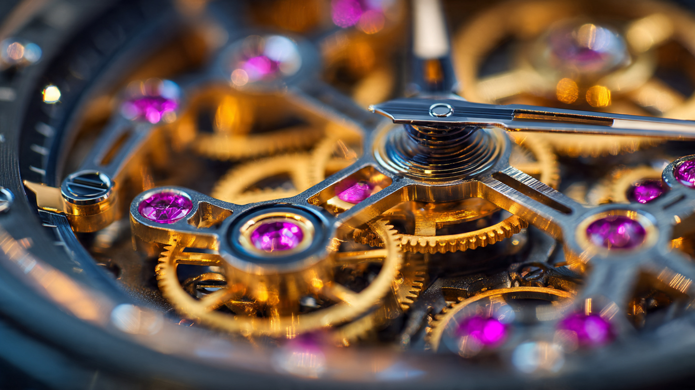

Nine Thousand RPM and Five-Micron Tolerances: The Bugatti Tourbillon’s Dual Engineering Heritage

Abraham-Louis Breguet filed his patent for the tourbillon mechanism on June 26, 1801. Born in Neuchâtel and trained in Paris, Breguet solved a problem that had plagued pocket watches for a century: gravity pulls unevenly on a balance wheel depending on its orientation, introducing positional errors that accumulate into seconds of drift per day. His solution was to mount the entire escapement inside a rotating cage that completed one revolution per minute, averaging out gravitational effects across all positions. Over two hundred years later, the tourbillon remains the most celebrated complication in mechanical watchmaking, and no one has meaningfully improved upon its operating principle.
Bugatti chose that word for the successor to its Chiron. Not the name of a racing driver, as every previous modern Bugatti had carried, but a watchmaking term. And then Bugatti did something more interesting than merely borrowing a name: the company hired actual watchmakers to build the car's dashboard.
A Movement for the Dashboard
Concepto, founded in 2006 by Valérien Jaquet in La Chaux-de-Fonds, supplies movements to several of the industry's most prominent watch brands and holds the record for the thinnest mechanical watch ever produced at 1.70 millimeters. When Bugatti needed a partner capable of building an entirely mechanical instrument cluster, Concepto was the obvious choice. No other manufacture had both the horological expertise and the manufacturing flexibility to tackle a project of this scale.
Scale is the operative challenge. A typical watch movement measures 25 to 30 millimeters in diameter and 3 to 5 millimeters in height. Concepto's cluster for the Tourbillon consists of three modules: one large central dial flanked by two smaller satellite displays, collectively containing more than 650 individual components. Some parts are up to 80 percent larger than anything Concepto had previously manufactured, including desk clock mechanisms. Production machines had to be adapted from scratch, and entirely new tooling was developed for operations that fell outside standard horological practice.
Guillaume Tripet, Concepto's project manager for the Tourbillon, describes the layout as “reminiscent of a classic wristwatch with multiple complications, except here, instead of a stopwatch or moon phase, the central vehicle data is displayed, along with the exquisite mechanics behind the hands.” Visible through sapphire crystal, the gear trains connect to hand-finished needles that display speed, engine RPM, fuel level, and battery state. Functional ruby bearings reduce friction at pivot points, performing exactly the same role they serve inside a mechanical watch caliber. Skeletonized structures expose the movement, and the smallest manufacturing tolerance in the cluster is five microns, or 0.005 millimeters. That is one-tenth the diameter of a human hair, and it matches the precision demanded in high-end watch production.
What makes this cluster genuinely novel, rather than merely decorative, is the interface between Swiss mechanics and automotive electronics. Eight FAULHABER stepper motors, manufactured in the same city of La Chaux-de-Fonds, translate electronic CAN bus signals from the car's onboard computer into precise mechanical hand movements. Four motors sit in the left satellite display, driving three indicator elements through worm gears. Four more drive the central and right displays through visible gear trains behind sapphire glass. Each motor moves a single needle.
FAULHABER selected the AM0820 and AM1020 models, measuring 8 and 10 millimeters in diameter respectively, because nothing larger would fit inside the cluster alongside the mechanical gear trains. Custom motor controllers translate measurement signals into hand movements and hold a stable position when values remain constant. Operating temperature spans from minus 30 to plus 120 degrees Celsius, because the cluster sits in direct sunlight behind the windscreen with only a single ventilation opening for cooling. On a freezing January morning, the motors must start instantly and drive the needles to their correct positions without delay. On a hot August afternoon in Molsheim, they must continue operating as the cluster's internal temperature climbs past the boiling point of water.
Completed, the cluster weighs 700 grams and mounts to the steering column via a fixed hub. Instead of the steering wheel turning as a unit, only the rim rotates while the hub and instrument cluster remain stationary, giving the driver an unobstructed view of the gauges regardless of steering angle. French automakers have used fixed-hub steering before, but never with a component of this complexity mounted in the hub position.
One Meter of Crankshaft
Behind the driver sits the other half of the Tourbillon's dual engineering heritage: an 8.3-liter naturally aspirated V16 engine developed by Cosworth at its Northampton facility. After three decades of quad-turbocharged W16 engines in the Veyron and Chiron, Bugatti under CEO Mate Rimac went in the opposite direction. No turbochargers. No forced induction at all. Instead, 16 cylinders arranged in a 90-degree vee, a cross-plane crankshaft measuring nearly one meter in length, and a redline at 9,000 RPM.
Cosworth, which has accumulated 176 Formula One victories and built engines for everything from the DFV to the Ford Sierra RS500, faced a specific packaging challenge with the V16: managing torsional vibration in a crankshaft of unprecedented length. Bruce Wood, Cosworth's Managing Director of Powertrain, described the problem directly: “With the crank and camshafts measuring almost a meter long, we had to employ innovative design technology to overcome the torsional loads.” At 9,000 RPM, a crankshaft harmonically resonates at frequencies that would fatigue conventional steel forgings, and the camshafts driving 32 valves through individual intake and exhaust events compound the problem. Cosworth's solution involved optimized counterweight placement, material selection that prioritized both stiffness and damping characteristics, and a firing order tuned to cancel specific resonant modes rather than excite them.
On its own, the V16 produces 987 horsepower. It weighs 252 kilograms, lighter than the naturally aspirated V12 in the Aston Martin Valkyrie despite having four additional cylinders and 2.8 liters more displacement. Titanium connecting rods and a carbon fiber inlet plenum contribute to the weight advantage, and the engine mounting angle was chosen not for aesthetics but for packaging: tilting the V16 backward opened space underneath the car for Venturi tunnels that generate downforce without a prominent rear wing.
Electric Motors as Enablers, Not Replacements
Rimac built the hybrid system around a philosophy he articulated during the car's unveiling: “Rather than electric motors serving as a replacement for the combustion engine, they are enablers, unlocking the full emotional potential of a high-revving V16.” Two electric motors on the front axle and one on the rear axle, integrated into an eight-speed dual-clutch transmission, add 800 horsepower to the V16's 987 for a combined output of 1,800 horsepower. Combined torque is 900 Nm.
Each front motor independently drives one front wheel, enabling full torque vectoring: the system shuffles power between left and right front wheels depending on which has more grip, functioning as a continuously variable electronic limited-slip differential with no mechanical locking mechanism required. At the rear, the electric motor spins to 24,000 RPM and sits inside the transmission housing, where it serves triple duty as a torque-fill device during gear changes, a starter motor for the V16 (eliminating the traditional 12-volt starter), and a regenerative braking energy recovery unit.
A T-shaped 24.8 kWh battery pack, running at 800 volts and oil-cooled, is structurally integrated into the carbon composite monocoque rather than bolted on as a separate module. Using the chassis itself as the battery's casing saved weight and lowered the center of gravity. With 800-volt charging hardware, the battery reaches 80 percent capacity in 12 minutes and provides 60 kilometers of pure electric driving range for urban operation.
Perhaps the most telling figure in the entire powertrain specification: the rear powertrain assembly, comprising the V16 engine, the eight-speed DCT, and the rear electric motor, weighs 430 kilograms. That is lighter than the Chiron's W16 engine and gearbox combined, despite the Tourbillon assembly containing an additional electric motor and its associated power electronics.
Bones Grown in a Printer
Divergent Technologies, the Los Angeles-based digital manufacturer founded by Kevin Czinger, supplies the Tourbillon's chassis and suspension components through its Divergent Adaptive Production System, or DAPS. Rather than stamping or forging suspension wishbones from aluminum billet, Divergent prints them from metal powder using Nikon SLM Solutions NXG XII 600 laser powder-bed fusion printers. AI-driven topology optimization removes every gram of material that does not contribute to structural load paths, producing organic shapes that resemble bones or coral rather than conventional machined parts.
Conventional subtractive manufacturing starts with a billet that weighs several times the finished part and cuts away material until the desired shape remains. Additive manufacturing starts with nothing and deposits material only where structural analysis says it is needed. For a suspension wishbone, that means thin walls in low-stress regions, solid buttresses at mounting points and ball joint interfaces, and web-like internal lattices that distribute impact loads across the entire structure. Bugatti's previous exploration of 3D-printed titanium suspension components for the Bolide track car demonstrated the concept: pushrods weighing 100 grams that withstood 3.5 tons of compressive force. On the Tourbillon, Divergent scales this approach to primary suspension arms, and the resulting parts are partially exposed to airflow and shaped as airfoils to contribute to aerodynamic management.
Assembling the Contradictions
A hypercar that weighs under 1,995 kilograms despite containing a 16-cylinder combustion engine, three electric motors, a 25 kWh battery, and an eight-speed dual-clutch gearbox. An instrument cluster with five-micron tolerances in a vehicle designed for 444 km/h. Ruby jewel bearings in a dashboard that will experience cornering loads exceeding 1.5 g. Stepper motors operating at 120 degrees Celsius driving needles through gear trains assembled by a Swiss watchmaker whose normal production runs at room temperature behind glass cases.
None of these combinations are natural. Mechanical watchmaking evolved in environments of minimal vibration, controlled temperature, and static orientation, which is precisely why Breguet invented the tourbillon in the first place: to compensate for the positional variation that occurred merely from a pocket watch being carried while walking. Concepto's cluster must survive conditions several orders of magnitude more violent than anything a wristwatch encounters, and it must do so while maintaining the legibility, precision, and finishing standards of haute horlogerie.
Bugatti's CTO Emilio Scervo acknowledged the absurdity of the specification during the car's development: “Ultimately, we chose the hardest possible option, creating a powertrain from scratch and pairing it seamlessly with a complex system of e-motors, a new generation eight-speed dual-clutch gearbox, and more, all developed from the ground up specifically for the Tourbillon.” Production begins at Molsheim in 2026, limited to 250 units, each hand-built over months of assembly time.
What the Tourbillon actually demonstrates, underneath the superlatives, is a thesis about durability through mechanical honesty. Digital screens age. Software becomes unsupported. Pixels die, backlights yellow, and touchscreen interfaces become quaint within a decade. Ruby bearings, sapphire crystal, and hand-finished gear trains do not age. Neither does a naturally aspirated engine that produces its power through displacement and cylinder count rather than software-managed boost pressure. Bugatti's stated ambition is that the Tourbillon will be displayed on concours lawns a century from now. A digital dashboard from 2026 will look as dated in 2126 as a CRT monitor looks today. A mechanical instrument cluster built to watchmaking standards will look exactly as it does now, because the engineering principles are unchanged since Breguet filed his patent in 1801.
Mate Rimac, whose own Nevera holds 24 acceleration and speed records as a pure electric hypercar, summed up the engineering philosophy with characteristic directness: “Yes, it is crazy to build a new V16 engine and to have a real Swiss-made watchmaker instrument cluster, with 3D-printed suspension parts and a crystal glass centre console. But it is what Ettore would have done, and it is what makes a Bugatti incomparable and timeless.”
Sources
- Bugatti Newsroom, “Masterpiece within a masterpiece: Bringing haute horlogerie to the Bugatti Tourbillon,” newsroom.bugatti.com (2025)
- Design World Online, “Precision mechanics with FAULHABER in Bugatti’s Tourbillon dashboard,” designworldonline.com (2025)
- Born To Engineer, “Cosworth’s V16 Masterpiece: Powering the 1,775 HP Bugatti Tourbillon,” borntoengineer.com (2024)
- Interesting Engineering, “Bugatti Tourbillon’s monster V16 unleashes 1,800 hp, 9,000 rpm,” interestingengineering.com (2024)
- Classic Driver Magazine, “The Bugatti Tourbillon is a V16 hypercar designed to last for eternity,” classicdriver.com (2024)
- T3, “The £3.2m Bugatti Tourbillon is part-hybrid hypercar, part-Swiss watch,” t3.com (2024)
- 3DPrint.com, “Bugatti Leverages Divergent to 3D Print Chassis and Suspension Parts for Tourbillon Hypercar,” 3dprint.com (2024)
- Time and Tide, “Bugatti’s latest hypercar, the Tourbillon, might be the most watch-inspired vehicle ever made,” timeandtidewatches.com (2024)
- Autoblog, “Exploring the Bugatti Tourbillon Interior: Where Watchmaking Replaces Screens,” autoblog.com (2024)
- autoevolution, “The Tourbillon: What Happens When AI, Aerodynamics, and a V16 Walk Into a Bugatti Garage,” autoevolution.com (2025)